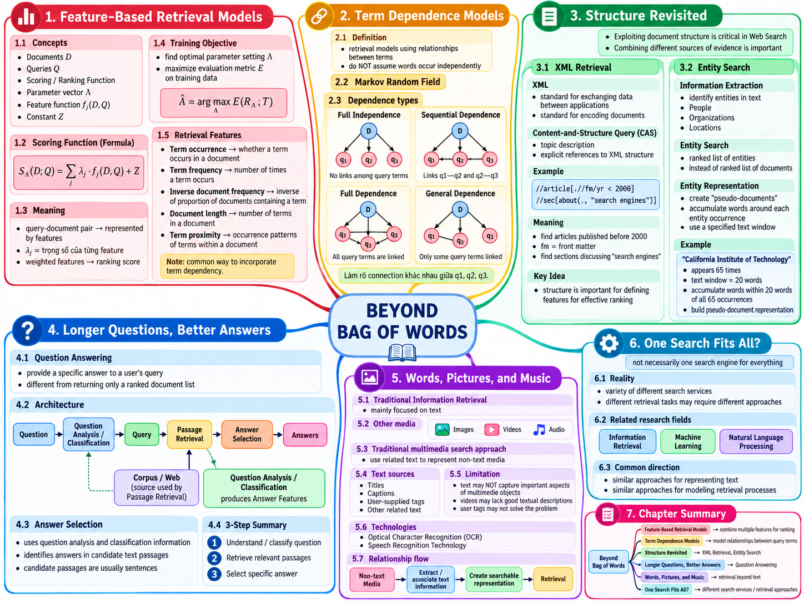

Tài liệu gốc: Slide bài giảng SEG301m Chương 12, "Beyond Bag of Words" (14 slide)
Cách đọc: Mô hình túi từ (Bag of Words, BoW) là biểu diễn nền tảng rất mạnh mẽ, nhưng lại lược bỏ thứ tự từ, cấu trúc tài liệu, thực thể và nội dung đa phương tiện. Chương này dựa trên các kỹ thuật tìm kiếm đã học để bổ sung thêm các manh mối phù hợp cho từng mục tiêu cụ thể.
Mục tiêu của chương
Sau khi học xong chương này, bạn có thể giải thích và thực hiện các nội dung sau:
- Nêu rõ những thông tin mô hình túi từ giữ lại và những thông tin bị mất qua các ví dụ cụ thể.
- Tính điểm số trong mô hình truy xuất dựa trên đặc trưng (feature-based retrieval) và giải thích sự thay đổi thứ bậc khi thay đổi trọng số.
- Phân chia tập huấn luyện (training data), tập kiểm định (validation data), tập kiểm thử (test data) và chọn ứng viên tham số từ kết quả đánh giá.
- Giải thích bốn cấu trúc term dependencephụ thuộc từ và phân biệt cụm từ với proximitytính gần kề.
- Phân biệt đơn vị kết quả trả về giữa truy xuất phần tử XML, truy xuất thực thể và hệ thống hỏi đáp (QA).
- Nêu rõ biểu diễn văn bản cho hình ảnh, video, âm thanh cùng giới hạn của OCR và nhận dạng tiếng nói.
- Giải thích lý do mỗi dịch vụ tìm kiếm cần biểu diễn, xếp hạng và tiêu chí đánh giá khác nhau.
SLIDE NGUỒN 1-3

Bắt đầu từ những giới hạn của Bag of Words
Mô hình túi từ (Bag of Words, BoW) biểu diễn tài liệu dưới dạng tập hợp hoặc tần số xuất hiện của các từ. Mô hình giữ lại thông tin một từ có xuất hiện hay không và xuất hiện bao nhiêu lần, nhưng thông thường sẽ loại bỏ hoàn toàn thứ tự từ và vị trí xuất hiện.
chó cắn người
người cắn chó
Trong mô hình BoW cơ bản, cả hai câu trên đều chứa chó, người, cắn mỗi từ đúng 1 lần, do đó có vector biểu diễn giống hệt nhau. Tuy nhiên, ý nghĩa ai cắn ai lại hoàn toàn trái ngược. Câu tiếng Anh dog bites man và man bites dog cũng thể hiện rõ hạn chế này.
Việc BoW bỏ qua thứ tự từ không có nghĩa là các mô hình dựa trên từ (term-based model) mất đi giá trị. Các mô hình như tf-idf, BM25 và mô hình ngôn ngữ (language model) vẫn đóng vai trò cốt lõi trong các hệ thống tìm kiếm quy mô lớn. Khi cần thiết, hệ thống sẽ bổ sung thêm các manh mối sau:
- Vị trí từ và khoảng cách gần kề giữa các từ.
- Cấu trúc tài liệu như tiêu đề, tác giả, đề mục và từng phần văn bản.
- Thực thể và quan hệ giữa con người, tổ chức, địa danh.
- Đặc trưng hình ảnh, đặc trưng âm thanh, văn bản trích xuất từ OCR hoặc bản gỡ băng từ nhận dạng tiếng nói.
Khái niệm "Vượt ra ngoài mô hình túi từ" không chỉ gói gọn trong biểu diễn vector nhúng (embedding) hay mô hình ngôn ngữ lớn (LLM). Trọng tâm cốt lõi của slide bài giảng tập trung vào: mô hình đặc trưng, phụ thuộc từ, cấu trúc tài liệu, thực thể, question answeringhỏi đáp và dữ liệu đa phương tiện.
Xem đáp án gợi ý
Không đồng nghĩa. Mô hình BoW thông thường vẫn lưu giữ sự hiện diện và tần số xuất hiện của từng từ. Thông tin bị mất ở đây là từ nào đứng trước, từ nào đứng sau, các từ cách nhau bao xa, hoặc từ nằm ở phần nào trong tài liệu.
12.1 Mô hình truy xuất dựa trên đặc trưng
SLIDE NGUỒN 4-6
Biểu diễn cặp truy vấn - tài liệu bằng các đặc trưng
Mô hình truy xuất dựa trên đặc trưng (feature-based retrieval model) tính toán nhiều đặc trưng khác nhau cho từng cặp truy vấn Q và tài liệu D, sau đó cộng tổng có trọng số:
D: tài liệu cần tính điểm.Q: truy vấn của người dùng.f_j(D,Q): hàm đặc trưng thứj, ánh xạ cặp truy vấn và tài liệu thành một số thực.Λ = (λ_1, …, λ_m): vector trọng số của các đặc trưng.S_Λ(D;Q): điểm số dùng để xếp hạng. Đây là điểm số đánh giá, không nhất thiết là xác suất.Z: hằng số không phụ thuộc vàoDđối với cùng mộtQvàΛ. Slide nêu rõZcó thể phụ thuộc vàoQhoặcΛ.
Khi cộng cùng một hằng số Z cho mọi tài liệu ứng viên của cùng một truy vấn, chênh lệch điểm số giữa các tài liệu không đổi nên thứ tự xếp hạng được bảo toàn. Tuy nhiên, nếu Z hoặc thang đo đặc trưng khác nhau giữa các truy vấn thì điểm số giữa các truy vấn khác nhau sẽ không thể so sánh trực tiếp. Slide gốc không định nghĩa Z là hàm phân phối hay số hạng chuẩn hóa xác suất.
Nếu mô hình không áp đặt ràng buộc, trọng số λ_j có thể nhận giá trị âm và tổng các trọng số không bắt buộc phải bằng 1. Ví dụ, nếu coi độ dài tài liệu là một yếu tố phạt thì có thể gán trọng số âm cho đặc trưng độ dài.
Tính điểm ba tài liệu
Xét truy vấn thông tin tìm kiếm mô hình. Riêng đặc trưng f1 được tính trực tiếp từ tập các từ truy vấn phân biệt theo công thức độ bao phủ:
Truy vấn này có đúng 3 từ phân biệt. Tài liệu D1 chứa cả ba từ thông tin, tìm kiếm, mô hình, D2 cũng chứa cả ba từ thông tin, tìm kiếm, mô hình, còn D3 chỉ chứa duy nhất từ mô hình. Do đó, độ bao phủ lần lượt là 3/3, 3/3 và 1/3. Sự xuất hiện lặp lại của một từ không làm tăng tử số. Các đặc trưng từ f2 đến f5 là các giá trị giả định từ 0 đến 1 dùng cho mục đích minh họa bài học:
| Đặc trưng | Ý nghĩa | D1 | D2 | D3 |
|---|---|---|---|---|
f1 coverage |
Độ bao phủ các từ truy vấn phân biệt (tính toán) | 1.0 | 1.0 | 1/3 |
f2 manh mối TF |
Tần số từ truy vấn đã chuẩn hóa (giả định) | 0.7 | 0.9 | 1.0 |
f3 khớp từ hiếm |
Mức độ khớp với từ hiếm (giả định) | 0.6 | 0.4 | 0.9 |
f4 tính gần kề |
Mức độ các từ truy vấn xuất hiện gần nhau (giả định) | 1.0 | 0.2 | 0.0 |
f5 chi phí độ dài |
Giá trị càng lớn tài liệu càng dài (giả định) | 0.8 | 0.5 | 0.3 |
Trước hết, áp dụng bộ trọng số Λ_A = (2.0, 0.8, 1.0, 1.2, -0.5) và Z = 0.3:
S_A(D1) = 2(1.0) + 0.8(0.7) + 1(0.6) + 1.2(1.0) - 0.5(0.8) + 0.3 = 4.26
S_A(D2) = 2(1.0) + 0.8(0.9) + 1(0.4) + 1.2(0.2) - 0.5(0.5) + 0.3 = 3.41
S_A(D3) = 2(1/3) + 0.8(1.0) + 1(0.9) + 1.2(0.0) - 0.5(0.3) + 0.3 = 2.5167
Thứ tự xếp hạng là D1 > D2 > D3. Do đặc trưng gần kề (f4) có trọng số lớn, tài liệu D1 với các từ nằm sát nhau được xếp trên đầu.
Tiếp theo, áp dụng bộ trọng số Λ_B = (1.0, 1.3, 2.0, 0.2, -0.2) ưu tiên khớp từ hiếm và tần số từ:
| Tài liệu | S_B |
Thứ bậc |
|---|---|---|
| D1 | 3.45 | 2 |
| D2 | 3.21 | 3 |
| D3 | 3.6733 | 1 |
Mặc dù D3 chỉ chứa 1 trong 3 từ truy vấn (mô hình), nhưng nhờ điểm khớp từ hiếm và TF rất cao trong dữ liệu giả định, D3 đã vươn lên dẫn đầu với Λ_B. Thay đổi trọng số đồng nghĩa với việc thay đổi quan điểm "manh mối nào quan trọng hơn". Nếu các đặc trưng có thang đo khác nhau thì không thể chỉ nhìn vào độ lớn của trọng số để so sánh tầm quan trọng, do đó cần lưu trữ cả phương pháp chuẩn hóa đặc trưng.
Học tham số là gì
Slide 5 nêu mục tiêu tối ưu hóa:
Toán tử arg max trả về "cấu hình tham số làm cực đại hóa chỉ số đánh giá", chứ không phải giá trị đánh giá cực đại đó. Cần phân biệt rõ việc tính điểm với một bộ Λ cố định và việc tìm kiếm bộ Λ tối ưu trong quá trình học:
- Tập huấn luyện (training data): Dùng để khớp mô hình và sinh các ứng viên.
- Tập kiểm định (validation data): Dùng để chọn trọng số, ngưỡng và đặc trưng phù hợp.
- Tập kiểm thử (test data): Dùng để đo lường hiệu năng cuối cùng một lần duy nhất sau khi đã hoàn tất mọi lựa chọn.
Nếu dùng tập kiểm thử để chọn trọng số thì thông tin kiểm thử đã bị rò rỉ vào mô hình.
Lựa chọn ứng viên tham số trên tập kiểm định
Dữ liệu dưới đây là tập kiểm định phục vụ việc theo dõi quy trình lựa chọn, không phải kết quả thực nghiệm. Ba đặc trưng lần lượt là f1 = mức độ khớp từ, f2 = thứ tự từ và tính gần kề, f3 = chất lượng nguồn tài liệu tiên nghiệm, đều nằm trong khoảng từ 0 đến 1. Ba ứng viên trọng số là Λ_A = (1, 0, 0), Λ_B = (0, 1, 0), Λ_C = (0, 0, 1):
| Truy vấn kiểm định | Tài liệu | Vector đặc trưng (f1, f2, f3) |
Mức liên quan |
|---|---|---|---|
| V1 | A | (0.9, 0.7, 0.9) |
3 |
| V1 | B | (0.7, 0.9, 0.3) |
1 |
| V1 | C | (0.2, 0.1, 0.6) |
0 |
| V2 | D | (0.1, 0.1, 0.6) |
0 |
| V2 | E | (0.6, 0.9, 0.9) |
2 |
| V2 | F | (0.9, 0.5, 0.3) |
1 |
Quy tắc giải quyết hòa điểm giữa các tài liệu là xếp theo thứ tự mã định danh tài liệu tăng dần. Chỉ số NDCG@3 áp dụng độ tăng (gain) 2^rel - 1 và độ chiết khấu (discount) log2(rank + 1) như Chương 9. Vì cả ba tài liệu đều có nhãn liên quan nên IDCG được tạo từ chính tập đánh giá:
| Truy vấn | Nhãn liên quan | Thứ tự lý tưởng | IDCG@3 |
|---|---|---|---|
| V1 | A=3, B=1, C=0 | A, B, C | 7.630930 |
| V2 | D=0, E=2, F=1 | E, F, D | 3.630930 |
Minh họa tính toán cho Λ_A trên truy vấn V2:
score(D) = 1(0.1) + 0(0.1) + 0(0.6) = 0.1
score(E) = 1(0.6) + 0(0.9) + 0(0.9) = 0.6
score(F) = 1(0.9) + 0(0.5) + 0(0.3) = 0.9
Thứ tự xếp hạng: F, E, D
DCG@3 = (2^1 - 1)/log2(2) + (2^2 - 1)/log2(3) + 0/log2(4) = 2.892789
IDCG@3 = 3.630930
NDCG@3 = 2.892789 / 3.630930 = 0.796708
Kết quả tính toán trên toàn bộ ba ứng viên:
| Ứng viên | Thứ tự V1 | NDCG V1 | Thứ tự V2 | NDCG V2 | Trung bình |
|---|---|---|---|---|---|
Λ_A |
A, B, C | 1.000000 | F, E, D | 0.796708 | 0.898354 |
Λ_B |
B, A, C | 0.709810 | E, F, D | 1.000000 | 0.854905 |
Λ_C |
A, C, B | 0.982838 | E, D, F | 0.963941 | 0.973391 |
Trong ba ứng viên trên, hệ thống chọn Λ_C vì đạt NDCG trung bình cao nhất (0.973391). Nếu các ứng viên hòa điểm NDCG trung bình, quy ước ưu tiên là chọn bộ trọng số có chuẩn L2 nhỏ hơn, nếu vẫn hòa thì chọn theo thứ tự mã ứng viên. Quy ước này hoàn toàn độc lập với quy tắc giải quyết hòa điểm điểm số tài liệu. Cần nhấn mạnh rằng Λ_C chỉ là ứng viên tốt nhất trong số ba cấu hình được thử nghiệm, không khẳng định đây là nghiệm tối ưu toàn cục trên toàn bộ không gian tham số. Sau bước lựa chọn này, mô hình được đánh giá một lần duy nhất trên tập kiểm thử độc lập.
Xem đáp án gợi ý
Không thay đổi. Vì mọi tài liệu đều được cộng cùng một lượng điểm như nhau, chênh lệch điểm số giữa các cặp tài liệu được bảo toàn. Tuy nhiên, điều này không đồng nghĩa với việc có thể so sánh điểm số giữa hai truy vấn khác nhau.
12.2 Phụ thuộc từ và MRF
SLIDE NGUỒN 7
Giả định độc lập từ (term independence) coi các từ thông tin, tìm kiếm, mô hình là các manh mối tách rời nhau. Tuy nhiên, một cụm từ xuất hiện đúng thứ tự hoặc các từ đồng xuất hiện gần nhau thường thể hiện chủ đề chính xác hơn nhiều so với việc chỉ đếm từ riêng lẻ.
Trường ngẫu nhiên Markov (Markov Random Field, MRF) là mô hình đồ thị vô hướng biểu diễn sự phụ thuộc giữa các nút. Vì các cạnh không có mũi tên, sơ đồ MRF không đại diện cho quan hệ nhân quả hay quy trình luồng xử lý. Trong sơ đồ ở slide, nút D là tài liệu, các nút q1, q2, q3 là các từ truy vấn.
| Cấu trúc | Cạnh nối giữa các từ truy vấn | Mối quan hệ biểu diễn |
|---|---|---|
| Độc lập hoàn toàn (full independence) | Không có cạnh nào giữa các q_i. Mỗi q_i chỉ nối với D |
Khớp từng từ đơn lẻ |
| Phụ thuộc tuần tự (sequential dependence) | q1-q2, q2-q3 |
Cụm từ và tính gần kề giữa các từ liền kề |
| Phụ thuộc hoàn toàn (full dependence) | q1-q2, q1-q3, q2-q3 |
Mối quan hệ giữa mọi cặp từ truy vấn |
| Phụ thuộc tổng quát (general dependence) | Chỉ nối các cặp từ cần thiết | Mối quan hệ chọn lọc dựa trên tri thức miền |
Sơ đồ phụ thuộc tổng quát trên slide thể hiện trường hợp chỉ liên kết một số cặp từ truy vấn nhất định. Việc chọn cạnh nào phụ thuộc vào từng bài toán cụ thể.
Phân biệt tài liệu cùng biểu diễn BoW nhờ vị trí từ
Xét truy vấn thông tin tìm kiếm mô hình và vị trí xuất hiện của các token. Cả ba tài liệu đều chứa mỗi từ truy vấn đúng 1 lần, do đó biểu diễn BoW đơn thuần là hoàn toàn giống nhau:
| Tài liệu | thông tin | tìm kiếm | mô hình | Đoạn trích chuỗi token |
|---|---|---|---|---|
| D1 | 2 | 3 | 4 | … thông tin tìm kiếm mô hình … |
| D2 | 2 | 8 | 3 | … thông tin mô hình … … … … tìm kiếm … |
| D3 | 2 | 3 | 9 | … thông tin tìm kiếm … … … … … mô hình |
Quy tắc đếm được công bố như sau:
- Cụm từ có thứ tự (ordered phrase): Nhận giá trị 1 nếu cả 3 từ xuất hiện liên tiếp đúng thứ tự truy vấn.
- Bigram có thứ tự: Đếm riêng số lượt khớp liên tiếp của
thông tin tìm kiếmvàtìm kiếm mô hình(mỗi lượt tính 1). - Cửa sổ không thứ tự 4: Nhận giá trị 1 nếu phạm vi nhỏ nhất chứa đủ cả ba từ không vượt quá 4 token (không phân biệt thứ tự).
| Tài liệu | Số unigram khớp | Cụm từ có thứ tự | Số bigram có thứ tự | Cửa sổ không thứ tự 4 |
|---|---|---|---|---|
| D1 | 3 | 1 | 2 | 1 |
| D2 | 3 | 0 | 0 | 0 |
| D3 | 3 | 0 | 1 | 0 |
D1 khớp trọn vẹn cả cụm từ, D3 chỉ khớp bigram đầu tiên, còn D2 có các từ nằm cách xa nhau và sai thứ tự.
Ví dụ tính điểm bổ sung: Slide gốc không đưa ra công thức tuyến tính cố định. Dưới đây là ví dụ minh họa cách kết hợp các đặc trưng sinh ra từ MRF:
Điểm số: D1 đạt 3 + 1.6 + 0.5 = 5.1, D2 đạt 3.0, D3 đạt 3.8. Điểm đặc trưng này không phải là xác suất chuẩn hóa. Nếu thay đổi kích thước cửa sổ, thứ tự từ hay quy tắc đếm trùng lặp thì kết quả sẽ thay đổi.
12.3 Cấu trúc tài liệu và truy xuất XML
SLIDE NGUỒN 8-9
Tiêu đề tóm tắt chủ đề chính, tác giả xác định chủ thể chịu trách nhiệm, thời điểm đăng phản ánh độ mới, các đề mục thể hiện chủ đề cục bộ, còn phần thân chứa nội dung chi tiết. Cùng một từ nhưng nếu xuất hiện ở tiêu đề sẽ mang sức nặng manh mối khác hẳn so với khi nằm ở chân trang (footer).
Hệ thống cần phân biệt giữa việc trả về toàn bộ tài liệu và việc chỉ trả về một phân đoạn hoặc phần tử cụ thể bên trong tài liệu. Định dạng XML biểu diễn cấu trúc tường minh, cho phép kết hợp đồng thời điều kiện nội dung và điều kiện cấu trúc.
Phân tích truy vấn CAS
Truy vấn nội dung và cấu trúc (Content-and-Structure query, CAS query) ở slide bài giảng:
//article[.//fm/yr < 2000]//sec[about(.,"search engines")]
Xét tập dữ liệu XML nhỏ:
<collection>
<article id="a1">
<fm><yr>1998</yr><title>Web Retrieval</title></fm>
<body>
<sec id="a1-s1"><title>Indexing</title><p>Search engines build indexes.</p></sec>
<sec id="a1-s2"><title>Networks</title><p>Packets cross routers.</p></sec>
</body>
</article>
<article id="a2">
<fm><yr>2005</yr><title>Modern Search</title></fm>
<body><sec id="a2-s1"><p>Search engines use many ranking signals.</p></sec></body>
</article>
<article id="a3">
<fm><yr>1997</yr><title>Database Systems</title></fm>
<body><sec id="a3-s1"><p>Database engines execute structured queries.</p></sec></body>
</article>
</collection>
article: phần tử đại diện cho toàn bộ bài báo khoa học.fm: phần thông tin đầu trang (front matter), chứa dữ liệu thư mục.yr: năm xuất bản.sec: phần nội dung (section) bên trong bài báo.[.//fm/yr < 2000]: điều kiện cấu trúc và số học, chỉ giữ lại các bài báo xuất bản trước năm 2000.//sec[about(...)]: điều kiện nội dung, tìm trong các bài báo thỏa mãn điều kiện năm những phầnsecviết vềsearch engines.
Trong ví dụ này, phần tử duy nhất được trả về là a1-s1. Phần tử a2-s1 khớp về mặt nội dung nhưng bị loại vì xuất bản năm 2005 (không thỏa mãn điều kiện năm < 2000). Phần tử a3-s1 thỏa mãn điều kiện năm nhưng nếu so khớp cụm từ chính xác thì không chứa search engines.
Toán tử about(...) là toán tử tìm kiếm nội dung trong ngôn ngữ truy vấn IR trên slide, không phải hàm chuẩn tích hợp sẵn của XPath tiêu chuẩn (standard XPath), do đó không thể mặc định chạy được trên mọi bộ phân tích XPath thông thường. Trong thực tế, hệ thống có thể dùng XPath để lọc trước các bài viết theo năm và phân đoạn cấu trúc, sau đó tính điểm IR để xếp hạng nội dung các phân đoạn đó. Khớp chuỗi ký tự đơn thuần không được xem là tìm kiếm ngữ nghĩa trọn vẹn.
12.4 Truy xuất thực thể
SLIDE NGUỒN 10
Trong entity searchtruy xuất thực thể, đối tượng trả về cho truy vấn không phải là danh sách các tài liệu, mà là danh sách các thực thể cụ thể như con người, tổ chức, địa danh. Quy trình tối thiểu gồm ba giai đoạn:
- Nhận dạng thực thể có tên (named entity recognition, NER): Tìm các từ hoặc cụm từ đại diện cho thực thể (mention) trong văn bản.
- Liên kết và định danh thực thể (entity linking / resolution): Xác định từ đó trỏ tới thực thể cụ thể nào trong thế giới thực, hoặc xác định xem hai cách gọi khác nhau có cùng chỉ một thực thể hay không.
- Xếp hạng thực thể (entity ranking): Xếp hạng các thực thể phù hợp nhất với câu truy vấn.
Từ Apple có thể là tên công ty hoặc loại quả; nhiều người có thể trùng họ tên với nhau. Ngược lại, Gerard Salton và G. Salton có khả năng cao cùng chỉ một nhà khoa học. Không thể chỉ dựa vào chuỗi ký tự bề mặt để gom nhóm hay tách rời thực thể.
Xây dựng tài liệu giả (pseudo-document) từ ngữ cảnh
Xét ngữ cảnh tiếng Anh trích xuất phục vụ bài học. Quy tắc tiền xử lý được ấn định như sau:
- Token hóa các chuỗi chữ cái Unicode liên tiếp và chuyển thành chữ thường. Dấu câu không tính là token,
G.trở thànhg. - Xác định vị trí bắt đầu và kết thúc của biểu diễn thực thể trên chuỗi token chữ thường ban đầu.
- Loại bỏ bản thân tên thực thể, lấy tối đa 5 token bên trái và tối đa 5 token bên phải (không vượt qua ranh giới tài liệu).
- Sau khi đã chốt kích thước cửa sổ 5 từ, mới tiến hành loại bỏ stopword trong tập
{was, by, at, and, for, a}. Tuyệt đối không loại stopword trước rồi mới đếm 5 từ.
Ký hiệu 20 words trên slide là ví dụ minh họa; khi triển khai cần nói rõ là tổng cộng 20 từ hay 20 từ mỗi bên. Ở đây chúng ta chọn cửa sổ 5 từ mỗi bên.
| Câu gốc | Biểu diễn thực thể |
|---|---|
vector space information retrieval was developed by Gerard Salton at Cornell |
Gerard Salton |
G. Salton studied automatic indexing and retrieval models |
G. Salton |
Karen Spärck Jones proposed inverse document frequency for retrieval |
Karen Spärck Jones |
Google operates a web search engine and advertising platform |
Xác định phạm vi cửa sổ ngữ cảnh:
| Biểu diễn | Vị trí sau chuẩn hóa | Cửa sổ trước khi lọc stopword | Cửa sổ sau khi lọc stopword |
|---|---|---|---|
| Gerard Salton | 8-9 | information retrieval was developed by at cornell |
information retrieval developed cornell |
| G. Salton | 1-2 | studied automatic indexing and retrieval |
studied automatic indexing retrieval |
| Karen Spärck Jones | 1-3 | proposed inverse document frequency for |
proposed inverse document frequency |
| 1 | operates a web search engine |
operates web search engine |
Trong ví dụ này, giả định bước liên kết thực thể đã định danh chính xác Gerard Salton và G. Salton là cùng một người. Sau đó, nối các cửa sổ ngữ cảnh của cùng một thực thể theo thứ tự xuất hiện để tạo thành tài liệu giả (pseudo-document):
Gerard Salton pseudo-document (tài liệu giả):
information retrieval developed cornell studied automatic indexing retrieval
Karen Spärck Jones pseudo-document (tài liệu giả):
proposed inverse document frequency
Google pseudo-document (tài liệu giả):
operates web search engine
Xét truy vấn vector retrieval. Ở đây chúng ta dùng "tổng số lần xuất hiện của các từ truy vấn" làm điểm số. Đây là chỉ số khác với "số lượng từ truy vấn phân biệt được khớp":
| Thực thể | Số lần xuất hiện vector |
Số lần xuất hiện retrieval |
Tổng điểm tần số xuất hiện | Số từ phân biệt khớp |
|---|---|---|---|---|
| Gerard Salton | 0 | 2 | 2 | 1 |
| Karen Spärck Jones | 0 | 0 | 0 | 0 |
| 0 | 0 | 0 | 0 |
Thứ tự xếp hạng là Gerard Salton > Google > Karen Spärck Jones (các trường hợp hòa điểm 0 được xếp theo bảng mã Unicode của tên hiển thị). Đơn vị kết quả trả về ở đây là thực thể, không phải tài liệu.
Nếu cửa sổ ngữ cảnh quá hẹp, hệ thống sẽ bỏ sót bằng chứng; nếu quá rộng, các chủ đề khác trong cùng đoạn văn sẽ bị lẫn vào. Nếu một thực thể được nhắc đến quá nhiều lần làm lấn át điểm số, cần cân nhắc chuẩn hóa theo tài liệu hoặc kiểm soát tính đa dạng nguồn.
12.5 Hỏi đáp
SLIDE NGUỒN 11
Hệ thống hỏi đáp (question answering, QA) hướng tới việc trả về câu trả lời cụ thể và trực tiếp, thay vì chỉ trả về một danh sách các tài liệu liên quan. Luồng xử lý tổng thể gồm các bước:
Câu hỏi (question)
↓
Phân tích / Phân loại câu hỏi (question analysis / classification)
↓ câu truy vấn và kiểu câu trả lời mong đợi
Truy xuất đoạn văn (passage retrieval) từ kho dữ liệu hoặc Web
↓ các đoạn văn ứng viên
Lựa chọn câu trả lời (answer selection) dựa trên đặc trưng câu trả lời
↓
Câu trả lời cuối cùng (answer)
Bước phân tích câu hỏi không chỉ nắm bắt chủ đề mà còn ước lượng kiểu câu trả lời mong đợi (tên người, ngày tháng, định nghĩa, số lượng). Bước truy xuất đoạn văn tìm kiếm các câu hoặc đoạn văn ứng viên, còn bước lựa chọn câu trả lời dựa vào kiểu câu hỏi, khoảng cách từ, độ tin cậy của nguồn và mẫu ngữ pháp để chọn ra đáp án phù hợp nhất.
Ví dụ minh họa hoàn chỉnh
Xét câu hỏi: "Trong thuật toán HITS, một trang có authority scoređiểm uy tín cao là trang như thế nào?". Kiểu câu trả lời mong đợi là định nghĩa hoặc giải thích nguyên lý.
| Đoạn văn ứng viên | Nội dung | Đánh giá |
|---|---|---|
| P1 | Những trang được liên kết nhiều từ các trang trung tâm tốt sẽ có điểm uy tín cao. |
Trả lời trực tiếp và đúng trọng tâm câu hỏi |
| P2 | HITS thực hiện tính toán lặp trên tập các trang liên quan đến truy vấn. |
Có từ khóa HITS nhưng không chứa định nghĩa câu trả lời |
| P3 | Điểm uy tín được quyết định hoàn toàn bởi số lượng liên kết đi ra. |
Đúng dạng thức trả lời nhưng nội dung sai lệch và mâu thuẫn |
Khi chọn P1, câu trả lời của mô hình hỏi đáp dạng trích xuất (extractive QA) là một đoạn văn bản xuất hiện liên tục trong nguồn: được liên kết nhiều từ các trang trung tâm tốt. Nếu muốn diễn đạt thành câu hoàn chỉnh dễ đọc, hệ thống sau khi trích xuất sẽ chuyển sang khâu sinh câu: "Đó là những trang nhận được nhiều liên kết trỏ tới từ các trang trung tâm uy tín". Cần phân biệt rõ hai giai đoạn này: câu sinh ra sau không phải là đoạn trích nguyên văn liên tục của P1.
Đoạn P2 chứa từ khóa HITS nhưng không trả lời trọng tâm câu hỏi. Khi các đoạn văn ứng viên mâu thuẫn nhau như P3, hệ thống phải đối chiếu độ tin cậy của nguồn và tổng hợp nhiều bằng chứng; nếu không đủ cơ sở xác thực thì cần trả lời là "chưa thể xác định".
Công cụ tìm kiếm thông thường trả về danh sách tài liệu; hỏi đáp dạng trích xuất trả về một đoạn liên tục (span) trong văn bản nguồn; còn generative QAhỏi đáp dạng tạo sinh có thể tổng hợp thành câu văn mới nhưng tiềm ẩn nguy cơ ảo giác (hallucination) nếu thêm thắt chi tiết ngoài nguồn. Tài liệu bài học này bám sát luồng phân tích - truy xuất - lựa chọn trong slide bài giảng kinh điển.
Câu hỏi dài chưa chắc đã đem lại kết quả tốt hơn. Nếu câu hỏi chứa quá nhiều từ thừa, giả định sai hoặc lồng ghép nhiều câu hỏi cùng lúc, khâu truy xuất đoạn văn sẽ gặp nhiều khó khăn.
12.6 Tìm kiếm hình ảnh, video và âm thanh
SLIDE NGUỒN 12
Các phương tiện truyền thông phi văn bản vẫn có thể được tìm kiếm thông qua tiêu đề, mô tả, thẻ và văn bản xung quanh. Tuy nhiên, các biểu diễn văn bản này không thể phản ánh trọn vẹn màu sắc, bố cục, chuyển động, giai điệu hay âm thanh môi trường.
| Đối tượng gốc | Biểu diễn phục vụ tìm kiếm | Ví dụ truy vấn phù hợp | Hạn chế và lỗi thường gặp |
|---|---|---|---|
| Ảnh slide bài giảng | Tên tệp, mô tả, văn bản trích xuất OCR | HITS authority formula |
OCR nhận dạng sai công thức toán, chữ dọc, ảnh mờ |
| Ảnh du lịch | Tiêu đề, thẻ, thời gian chụp, đặc trưng ảnh | hoàng hôn trên biển |
Thẻ mang tính chủ quan; OCR không hiểu được cảnh vật |
| Video bài giảng | Tiêu đề, đề mục, bản gỡ băng âm thanh, khung hình tiêu biểu | giải thích Dirichlet smoothing |
Nhận dạng tiếng nói nhận sai thuật ngữ chuyên môn hoặc tạp âm |
| Âm nhạc và âm thanh | Metadata, lời bài hát, giọng nói, đặc trưng âm học | bài hát giọng nữ, tiếng vỗ tay |
Nhận dạng tiếng nói không nhận diện được giai điệu hay âm thanh môi trường |
Công nghệ optical character recognitionnhận dạng ký tự quang học chuyển đổi chữ viết trong ảnh thành văn bản, nhưng không thể tự động hiểu toàn bộ bối cảnh, quan hệ giữa các vật thể hay cảm xúc trong bức ảnh. Công nghệ speech recognitionnhận dạng tiếng nói chuyển lời nói thành văn bản, nhưng để phân biệt nhạc cụ, nhịp điệu, giai điệu hay tiếng động môi trường thì bắt buộc phải dùng các đặc trưng âm học chuyên biệt.
Trong tìm kiếm ảnh và âm thanh dựa trên nội dung, hệ thống có thể kết hợp thêm màu sắc, hình dạng, vector nhúng hình ảnh và đặc trưng phổ âm thanh.
12.7 Một phương pháp tìm kiếm có đáp ứng được mọi nhu cầu?
SLIDE NGUỒN 13-14
Không có một quy tắc xếp hạng duy nhất nào tối ưu cho mọi mục đích tìm kiếm. Dù có chung các kỹ thuật lập chỉ mục và thuật toán xếp hạng nền tảng, mỗi dịch vụ lại có đơn vị kết quả, ý định người dùng, yêu cầu về độ mới, độ trễ phản hồi và phương pháp đánh giá hoàn toàn khác nhau.
| Dịch vụ | Đơn vị kết quả trả về | Ý định chính và đặc trưng quan trọng | Yêu cầu độ mới và độ trễ | Ví dụ chỉ số đánh giá |
|---|---|---|---|---|
| Tìm kiếm Web | Trang web, câu trả lời, trang chủ | Khớp từ truy vấn, liên kết, độ mới, tín hiệu spam | Dữ liệu cực lớn, yêu cầu phản hồi mili-giây | NDCG, tỷ lệ hoàn thành tác vụ, độ trễ |
| Tìm kiếm học thuật | Bài báo khoa học, tác giả, trích dẫn | Tiêu đề, tóm tắt, lĩnh vực, số trích dẫn, năm | Cần metadata chính xác và tính tái lập cao | Recall, NDCG, tỷ lệ tìm kiếm trích dẫn thành công |
| Tìm kiếm sản phẩm | Mặt hàng, điều kiện bán | Danh mục, thuộc tính, mức giá, tồn kho, đánh giá | Cập nhật kho hàng và giá theo thời gian thực | Mức liên quan, tỷ lệ mua hàng, tỷ lệ hoàn trả |
| Tìm kiếm ảnh / âm nhạc | Bức ảnh, bài nhạc, phân đoạn | Thẻ, mô tả, đặc trưng hình ảnh và âm học | Tốc độ phát trước (preview) và bản quyền | Mức liên quan, độ đa dạng, hành vi lưu và nghe lại |
Nếu tìm kiếm sản phẩm chỉ ưu tiên độ phổ biến, hệ thống có thể trả về các mặt hàng bán chạy nhưng sai lệch yêu cầu của truy vấn. Nếu tìm kiếm học thuật chỉ chú trọng bài mới xuất bản, người dùng sẽ bỏ lỡ các công trình kinh điển nền tảng. Tiêu chí đánh giá phải gắn liền với mục tiêu thực tế của từng dịch vụ.
Toàn cảnh quy trình tìm kiếm trong môn học
Thu thập (Acquisition)
Crawl Web, nguồn cấp (feed), cơ sở dữ liệu, nguồn P2P
↓
Xử lý văn bản (Processing)
Tách token, OCR, nhận dạng tiếng nói, trích xuất thực thể, phân tích cấu trúc
↓
Lập chỉ mục và Biểu diễn (Indexing / Representation)
Chỉ mục đảo, các trường dữ liệu, vị trí từ, tài liệu giả, đặc trưng đa phương tiện
↓
Tìm kiếm và Xếp hạng (Retrieval / Ranking)
BM25, mô hình ngôn ngữ, mô hình đặc trưng, phụ thuộc từ, HITS, gợi ý
↓
Tương tác người dùng (Interaction)
Hỗ trợ truy vấn, đoạn trích (snippet), hỏi đáp cộng đồng, tìm kiếm cộng tác, phản hồi
↓
Đánh giá (Evaluation)
Độ liên quan, thứ bậc, sai số, độ phủ, độ trễ phản hồi, hiệu quả thực tế của người dùng
Tín hiệu xã hội tác động mạnh đến thu thập, xếp hạng và tương tác. Cấu trúc tài liệu và thực thể bổ sung manh mối cho khâu xử lý và biểu diễn. Sự phụ thuộc từ nâng cao độ chính xác của khâu xếp hạng, còn xử lý đa phương tiện mở rộng năng lực biểu diễn dữ liệu. Không nên đưa mọi đặc trưng vào hệ thống một cách tùy tiện, mà cần thẩm định cẩn thận trên tập kiểm định xem đặc trưng nào thực sự mang lại hiệu quả cho bài toán.
Bài tập bổ sung: Thiết kế ba kiểu tìm kiếm cho cùng một truy vấn
Đây là bài tập bổ sung giúp liên kết các kiến thức trong chương.
Với truy vấn jaguar speed, hãy thiết kế ba hệ thống tìm kiếm: tìm kiếm trang web, tìm kiếm sản phẩm và tìm kiếm hình ảnh.
- Nêu ít nhất hai nét nghĩa khác nhau của từ
jaguar. - Xác định đơn vị kết quả trả về của từng hệ thống.
- Chọn ít nhất hai đặc trưng bổ sung ngoài BoWmô hình túi từ (BoW).
- Đưa ra một trường hợp thất bại tiềm ẩn và chỉ số đánh giá tương ứng.
Xem đáp án gợi ý
Từ jaguar có thể chỉ loài báo đốm (động vật) hoặc thương hiệu xe hơi Jaguar. Tìm kiếm Web trả về các trang web, có thể dựa vào lịch sử tìm kiếm hoặc các từ xuất hiện lân cận để phán đoán ý định người dùng. Tìm kiếm sản phẩm trả về danh mục mặt hàng, thương hiệu, mức giá, điều quan trọng là không được lẫn các trang từ điển động vật học vào danh sách hàng hóa. Tìm kiếm hình ảnh trả về các bức ảnh, kết hợp mô tả văn bản với đặc trưng hình ảnh. Chỉ số đánh giá: tìm kiếm Web dùng NDCG, tìm kiếm sản phẩm dùng độ phù hợp danh mục và tỷ lệ mua hàng, tìm kiếm ảnh dùng mức độ liên quan đa bậc kết hợp độ đa dạng. Nếu ý định của người dùng chưa rõ ràng, giao diện nên hiển thị các cụm kết quả phân chia theo nét nghĩa hoặc gợi ý bộ lọc thu hẹp phạm vi.
Tổng kết
SLIDE NGUỒN 27
- Mô hình BoW lưu giữ sự hiện diện và tần số của từ nhưng bỏ qua thứ tự, vị trí, cấu trúc và mối quan hệ thực thể.
- Mô hình truy xuất dựa trên đặc trưng kết hợp nhiều manh mối có trọng số; việc tính điểm với trọng số cố định tách biệt hoàn toàn với quá trình học tham số.
- Trọng số tối ưu được lựa chọn dựa trên tập kiểm định; tập kiểm thử chỉ được dùng một lần duy nhất cho khâu đánh giá cuối cùng.
- Mô hình phụ thuộc từ khai thác cụm từ và khoảng cách gần kề, sử dụng đồ thị vô hướng của MRF để biểu diễn quan hệ.
- Truy xuất XML kết hợp điều kiện nội dung và cấu trúc, cho phép trả về các phân đoạn nhỏ hơn toàn bộ tài liệu.
- Truy xuất thực thể gồm ba khâu rõ rệt: nhận dạng thực thể trong văn bản, liên kết định danh thực thể và xếp hạng thực thể.
- Hệ thống hỏi đáp (QA) trải qua các bước phân tích câu hỏi, truy xuất đoạn văn và lựa chọn câu trả lời để trả về đáp án trực tiếp.
- Tìm kiếm đa phương tiện kết hợp metadata văn bản với OCR, nhận dạng tiếng nói cùng các đặc trưng âm học và hình ảnh tùy theo mục tiêu.
- Mỗi dịch vụ tìm kiếm đòi hỏi đơn vị kết quả, nhóm đặc trưng, yêu cầu độ mới, độ trễ và tiêu chí đánh giá khác nhau.
Câu hỏi tự kiểm tra
- Vì sao mô hình BoW cơ bản khó phân biệt được hai câu
chó cắn ngườivàngười cắn chó? - Điều kiện để hằng số
Zkhông làm thay đổi thứ tự xếp hạng trong cùng một truy vấn là gì? - Toán tử
arg max_Λ E(...)trả về đối tượng gì? - Cạnh nối giữa các từ truy vấn khác nhau như thế nào giữa phụ thuộc tuần tự và phụ thuộc hoàn toàn?
- Vì sao không được mặc định coi
about(...)là hàm có sẵn của XPath tiêu chuẩn? - Nhận NERnhận dạng thực thể có tên (NER) khác với xếp hạng thực thể ở điểm nào?
- Vì sao một đoạn văn chứa đầy đủ từ khóa của câu hỏi chưa chắc đã là đáp án đúng trong hệ thống QA?
- Vì sao công nghệ OCR đơn thuần không thể giúp tìm kiếm toàn diện mọi nội dung của một bức ảnh?
Xem đáp án gợi ý
- Vì tần số xuất hiện của ba từ trong hai câu là như nhau và mô hình đã lược bỏ thông tin thứ tự quyết định chủ ngữ - vị ngữ.
- Với cùng một
QvàΛ, giá trịZđược cộng đồng đều như nhau cho mọi tài liệu ứng viên. - Trả về cấu hình tham số
Λlàm cho chỉ số đánh giá đạt giá trị lớn nhất. - Phụ thuộc tuần tự chỉ nối các cặp từ truy vấn nằm kề nhau, còn phụ thuộc hoàn toàn nối tất cả các cặp từ truy vấn với nhau.
- Vì đó là toán tử tìm kiếm nội dung được định nghĩa riêng trong ngôn ngữ truy vấn IR của slide, không thuộc bộ hàm chuẩn của các công cụ XPath thông thường.
- NER phát hiện vị trí các thực thể xuất hiện trong văn bản, còn xếp hạng thực thể sắp xếp thứ tự các thực thể theo độ liên quan với truy vấn.
- Vì đoạn văn đó có thể chỉ chia sẻ cùng chủ đề từ vựng chứ không trả lời đúng trọng tâm hoặc sai lệch kiểu dữ liệu câu hỏi mong đợi.
- Vì OCR chỉ chuyển đổi phần chữ viết trong ảnh thành văn bản, không biểu diễn được vật thể, màu sắc, bố cục, cảnh quan hay các vùng phi văn bản.
Bảng thuật ngữ
| English | Tiếng Việt | Ý nghĩa trong chương này |
|---|---|---|
| Bag of Words | Mô hình túi từ | Phương pháp biểu diễn tài liệu bằng tập hợp hoặc tần số từ, bỏ qua thứ tự |
| Feature | Đặc trưng | Manh mối số hóa biểu diễn mối quan hệ giữa truy vấn và tài liệu |
| Feature function | Hàm đặc trưng | Hàm ánh xạ cặp đối tượng thành giá trị đặc trưng số thực |
| Parameter vector | Vector tham số | Vector Λ chứa các trọng số của từng đặc trưng |
| Term dependence | Phụ thuộc từ | Mối quan hệ về thứ tự, khoảng cách gần kề hoặc đồng xuất hiện giữa các từ |
| Markov Random Field | MRFTrường ngẫu nhiên Markov (MRF) | Mô hình đồ thị vô hướng biểu diễn sự phụ thuộc giữa các biến |
| Sequential dependence | Phụ thuộc tuần tự | Cấu trúc chỉ khai thác sự phụ thuộc giữa các từ truy vấn nằm liền kề |
| Proximity | Tính gần kề | Mức độ các từ truy vấn xuất hiện gần nhau trong văn bản |
| Document structure | Cấu trúc tài liệu | Cách tổ chức tài liệu thành tiêu đề, tác giả, đề mục, phần thân |
| XML retrieval | Truy xuất XML | Tìm kiếm kết hợp đồng thời điều kiện nội dung và điều kiện cấu trúc XML |
| CAS query | Truy vấn nội dung và cấu trúc | Truy vấn chỉ định đồng thời cả yêu cầu nội dung và vị trí cấu trúc tài liệu |
| Named entity recognition | Nhận NERnhận dạng thực thể có tên (NER) | Bước trích xuất tên người, tổ chức, địa danh từ văn bản |
| Entity linking | Liên kết thực thể | Bước xác định thực thể được nhắc đến tương ứng với thực thể cụ thể nào |
| Entity search | Truy xuất thực thể | Tìm kiếm trả về danh sách các thực thể được xếp hạng thay vì tài liệu |
| Pseudo-document | Tài liệu giả | Biểu diễn văn bản nhân tạo gom từ ngữ cảnh xung quanh thực thể |
| Question answering | Hệ thống hỏi đáp (QA) | Hệ thống trả về câu trả lời trực tiếp và cụ thể cho câu hỏi của người dùng |
| Passage retrieval | Truy xuất đoạn văn | Bước tìm các câu hoặc đoạn văn có khả năng chứa câu trả lời |
| Optical Character Recognition | Optical character recognitionNhận dạng ký tự quang học | Công nghệ chuyển đổi chữ viết trong hình ảnh thành văn bản |
| Speech recognition | Nhận dạng tiếng nói | Công nghệ chuyển đổi lời nói âm thanh thành văn bản |
| Multimedia retrieval | Truy xuất đa phương tiện | Tìm kiếm trên các định dạng hình ảnh, video, âm thanh phi văn bản |